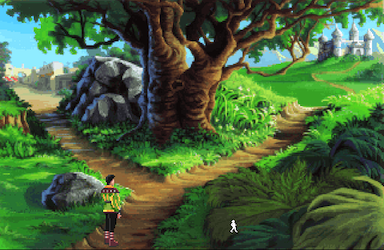

Conditional Statements¶
If Statements¶
An if-statement is a way to change what happens depending on the circumstances.
If-statements are compound statements, made up of the one or more conditions, followed by the group of statements that belong to it.
An if-statement can have three types of clauses:
an
ifclause is always present, followed by a conditionan optional
elifclause may appear multiple times and is also followed by a conditionand an optional
elseclause, which is like a default, and has no condition.
Let’s take a look at some examples.
1 2 3 | if status == "failed":
print("Sorry, you don't have access.")
exit()
|
1 2 3 4 | if winner == player:
print("Congratulations, you win!")
else:
print("Better luck next time.")
|
1 2 3 4 5 6 7 8 | if choice == "left":
print("You decide to take the path to the left.")
elif choice == "right":
print("You decide to take the path to the right.")
elif choice == "middle":
print("You decide to take the middle path.")
else:
print("Invalid choice.")
|
Exercises and questions¶
1. What is the value of options if level is "moderator".
1 2 3 4 5 6 7 8 | options = ["view", "list", "exit"]
if level == "admin":
options.append("remove")
elif level == "moderator":
options.append("flag")
elif level == "owner":
options.append("edit")
|
2. Fix the following.
if choice > highest:
print("Sorry, your pick choice is too high.")
else choice < lowest:
print("Sorry, your pick choice is too low.")
File "/tmp/ipykernel_1662/909388879.py", line 3
else choice < lowest:
^
SyntaxError: invalid syntax
Conditions¶
The expressions following the if and elif
keyword in an if-statement are called conditions. This is what tells
Python whether to execute the suite of statements in this clause.
Comparison Operators¶
Conditional statements often use Comparison operators which compare two
values and evaluate to either True or False.
Some examples of expressions using comparison operators:
5.5 < 3"fox" in "The quick brown fox jumps over the lazy dog"5*3 == 30
operator |
meaning |
examples |
|
|---|---|---|---|
|
equivalent values |
|
|
|
not equivalent values |
|
|
|
less than |
|
|
|
less than or equal to |
|
|
|
greater than |
|
|
|
greater than or equal to |
|
|
|
is member of |
|
|
|
is not a member of |
|
|
Exercises and questions¶
Open up a Python shell and use comparison operators to answer each of the following.
Is
F(capital F) greater thanz(lower case z)?Is
0.0equal to0Is
[1, 2, 3, 4]greater than[5, 6, 7]?Is the letter
"z"in the string"zebra"?Is the number
5in the list[1, 2, 4]?
Logical Operators¶
When you have more than one expression in a condition, you need a logical operator which evaluates to either True or False depending on the boolean value of both the left and right hand values.
Some examples of expressions using logical operators:
5 < 3 or 5 > 2"h" in "hello" and "H" in "hello"not 1 == 2
operator |
meaning |
example |
|---|---|---|
|
both conditions are true |
|
|
either condition is true |
|
|
the following is not true |
|
The not operator is special in that it does not include a left-hand value.
You can think of it like the opposite of the value that follows.
Exercises and questions¶
Tip: Check if a number is divisible by another
To test if a number is divisible by another number use the modulo operator %
which will give you the division remainder.
For example, 5/2 is 2.5, or 2 with a remainder of 1.
So 5%2 is 1.
And so to check if a number is divisible by another, just check if the remainder is zero.
num % 2 == 0
For each of the following get a random number using random.randint().
Get a random number between
1and100then check to see if it is greater than50or if it’s an even number.Get a random number between
1and100then check to see if it is an even number and divisible by ten.Use the
input()function to ask for a number and save it to a variable callednum. Checknum.isnumeric()and print an error message if it is not.
Truthy and Falsy¶
Python evaluates conditional expressions in a boolean context which determines if the resulting value is truthy or falsy.
A truthy value is one that Python considers to be the equivalent of True,
while a falsy value is one that Python considers to be the equivalent of
False. It determies this by first converting it to a boolean value, which
can be done using the bool() function.
Some examples of falsy values are
0zero""an empty string[]an empty list
Some examples of truthy values are:
5(a non-zero number)"hello"(a non-blank string)[35, 32, 89](a non-empty list)
Here are details for each data type.
Type |
Name |
Falsy |
Truthy |
|---|---|---|---|
|
string |
|
|
|
integer |
|
|
|
float |
|
|
|
dictionary |
|
|
|
list |
|
|
|
tuple |
|
|
|
boolean |
|
|
|
none |
|
Since conditions are evaluated in a boolean context (meaning the result of
the expression is converted to a bool) you can use a value as condition for
truthiness, or add the not operator for falsiness.
In this example we check the truthiness of an integer which we know will be
either 1 or 0.
1 2 3 | is_winner = random.randint(0, 1)
if is_winner:
print("Contgratulations, you win!")
|
This example checks to make sure that a user response is not blank.
1 2 3 | response = input("What's your name? ")
if not response:
print("Didn't get that. Try again.")
|
This example function expects a list of items. It checks to make sure the list is not empty first.
1 2 3 4 5 6 7 8 | def buy_items(items):
if not items:
print("Oops, the list of items is empty.")
return
print("You are buying", len(items), "items.")
for item in items:
buy(item)
|
Exercises and questions¶
Open up a Python shell and use the bool() function to find out if
each of the following is truthy or falsy.
-1negative one" "a space{}an empty dictionary[0]a list containing the value0
Glossary¶
Conditional Statements¶
- comparison operator¶
An operator that compares the left-hand value to the right-hand value then evaluates to either True or False.
- condition¶
- conditional¶
A valid piece of code that, when evaluated, results in boolean value.
- falsy¶
A value that is False when evaluated in a
booleancontext, or when converted to a boolean using thebool()function.- if statement¶
a compound statement that changes what code is executed depending on its conditions
- logical operator¶
An operator that considers both left-hand value and right-hand value then evaluates to either True or False.
- truthy¶
A value that is True when evaluated in a
booleancontext, or when converted to a boolean using thebool()function.- boolean context¶
Where the result of an expression is converted to a
bool.
Exercises¶
Exercise 1 (Flip a coin)
Pick a random number between
0and1and assign it to a variablecoin.Print “You tossed”, and the value of
coin.If the value of
coinis truthy, print “You win the coin toss!”
Exercise 2 (Computer guessing game)
Pick a number between
1and100and assign it to the variablepick. (Note: not random.)Get a random number between between
1and100and assign it to the variableguess.Print
"The computer guessed” and the value ofguess.If
guessis the same as pick print"The computer got it right!"If guess is within
30of pick print"The computer was close."(Hint: You’ll need theandoperator.)Otherwise print
"The computer got it wrong."
Exercise 3 (Heads or Tails)
In this exercise use the and operator and determine the truthiness of a value.
Ask the user
"heads or tails?"If the answer is blank, tell them they have to enter something.
If the answer is not
"heads"or"tails", tell them they need to pick"heads"or"tails". (Bonus: Make this case-insensitive.)Randomly decide if they won the coin toss.